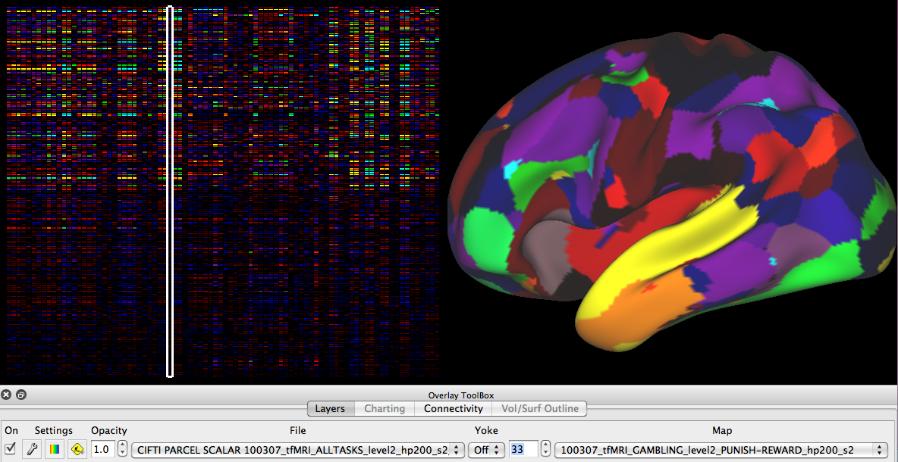

Matrix Chart View
When Matrix is selected as the Chart Type, the
Toolbar appears
like this:

- Select a Matrix chartable file in the Overlay Toolbox Charting
tab.
- Matrix charts do not dynamically change,
instead they show data that is dynamically accessible for
viewing on the surface/volume in other viewing tabs.
- When viewing a CIFTI
Parcel to parcel connectivity (.pconn.nii) file matrix, left
click on a row to select a parcel (will be outlined with a horizontal box
in the matrix). Parcel connectivity for
the selected parcel will be displayed on Viewing
Tabs that are showing the parcel
connectivity file as a layer.
- A parcel can also be
selected by clicking on a surface/volume in another
Viewing Tab and the corresponding parcel row will be
outlined in the matrix.

- When viewing a CIFTI Parcel Scalar (.pscalar.nii) file
matrix, the y-axis rows are parcels and the x-axis columns
are Map indices. When the map index is set in Overlay
Toolbox: Layers for any non-Chart
Viewing Tab, a vertical box appears in the matrix around
the column for the selected map index.

- Chart Attributes: To adjust
attributes of the matrix chart display, such as the cell
width and cell height. The default setting fills the
Viewing Area with the matrix cells. The Reset
button resets the cell size to the default.
- Tab: These across Tab
functions do not affect Chart View.